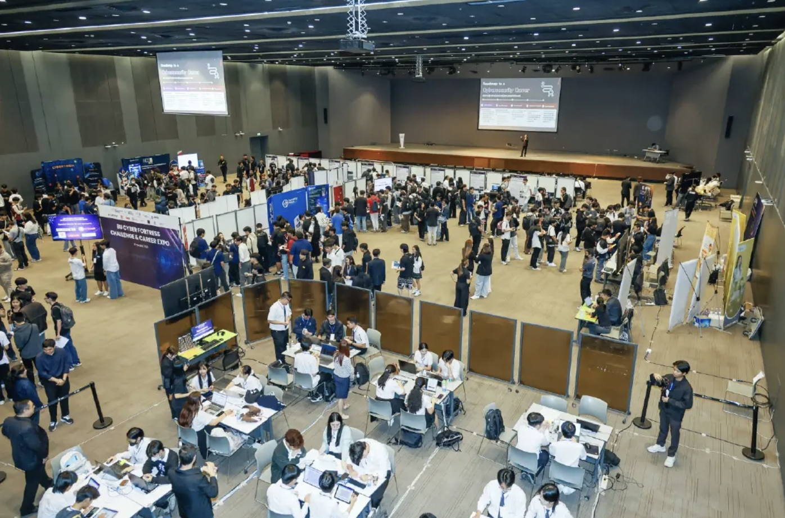
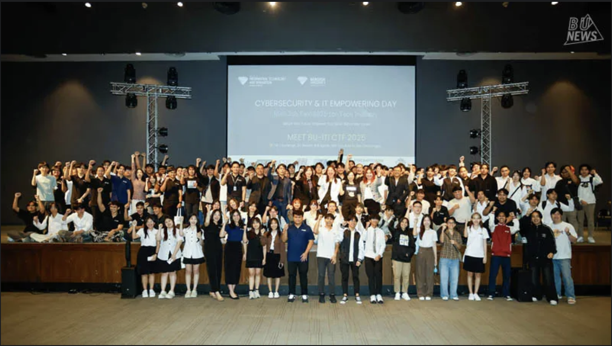

Strategic Collaboration Presentation
แนะนำ IT Empowering Day และความสำคัญของ AI ต่อทักษะนักศึกษารุ่นใหม่
การเชิญร่วมเป็นคณะกรรมการ Senior Project และโอกาสใน Mini Job Fair
แผนความร่วมมือเชิงวิชาการเพื่อสร้าง Work-Ready Talent ให้ตรงกับมาตรฐาน SCG
แนะนำ: กดปุ่มด้านบนเพื่อเริ่มการนำเสนอ
in the Era of AI
รับโจทย์และเตรียมความพร้อมก่อนงาน เพื่อให้นักศึกษาได้รับการบ่มเพาะและพัฒนาผลงานภาคอุตสาหกรรมก่อนนำเสนอ
เสวนาพิเศษ AI Frontier & Career Path เพื่อถ่ายทอดแนวโน้มเทคโนโลยีและทักษะที่นักศึกษาควรรู้
การแข่งขันกลุ่มขนาดเล็กเพื่อแก้โจทย์จริงด้วย AI พร้อมนำเสนอแนวคิดและต้นแบบ
จัดแสดงผลงาน Senior Project ชั้นปีที่ 4 พร้อมคัดเลือกผลงานดีเด่นโดยคณะกรรมการ
โชว์ผลงานนักศึกษาปี 3 ที่แก้โจทย์จริงจากภาคอุตสาหกรรม พร้อมข้อเสนอแนะจากบริษัท
จัดพื้นที่ให้บริษัทชั้นนำพบปะนักศึกษาและแนะนำโอกาสฝึกงาน สหกิจศึกษา และการจ้างงาน
กิจกรรมที่จัดขึ้นล่วงหน้าเพื่อให้นักศึกษาได้รับการบ่มเพาะแนวคิดและเตรียมความพร้อมในการพัฒนาโซลูชันภาคอุตสาหกรรมก่อนนำเสนอ
หลังจาก Workshop นักศึกษาจะได้รับโจทย์ปัญหา (Problem Statement) เพื่อพัฒนาแนวทางแก้ไขโดยใช้เทคโนโลยี AI ในรูปแบบการแข่งขันกลุ่มขนาดเล็ก
จัดแสดงทั้งหมด 9 ผลงาน Senior Project ที่โดดเด่นที่สุดจากชั้นปีที่ 4 เพื่อให้บริษัทและกรรมการพิจารณาคัดเลือกผลงานที่ดีที่สุด
ผลงานชั้นปีที่ 3 ที่พัฒนาเพื่อแก้โจทย์จริงจากบริษัท พร้อมรับความคิดเห็นจากตัวแทนอุตสาหกรรม
การแสดงผลงานทั้งสองส่วนนี้ช่วยสร้างแพลตฟอร์มเชื่อมโยงนักศึกษากับภาคอุตสาหกรรม และฝึกทักษะ Work-Ready Skills ที่จำเป็นต่อการทำงานจริง

นำเสนอพื้นที่พบปะมืออาชีพระหว่างนักศึกษากับบริษัทไอทีชั้นนำ พร้อมการแนะนำตำแหน่งงาน การเตรียม Resume และแนวทางการสมัครงาน
Leading Innovation Together
เชิญผู้เชี่ยวชาญจาก SCG ร่วมเป็นกรรมการตัดสินผลงาน Senior Project Showcase ทั้ง 9 ผลงาน เพื่อ:

ร่วมกำหนดทิศทางนวัตกรรมนักศึกษาและคนรุ่นใหม่
จัดพื้นที่ให้บริษัทชั้นนำในอุตสาหกรรมเทคโนโลยีสารสนเทศเข้าร่วมพบปะนักศึกษา เพื่อให้ข้อมูลเกี่ยวกับตำแหน่งงาน ทักษะที่ต้องการ และแนวทางการทำงานในสายอาชีพ
พร้อมให้คำแนะนำในการจัดทำ Resume และการเตรียมตัวสมัครงาน เพื่อเชื่อมโยงนักศึกษากับภาคอุตสาหกรรม และเพิ่มโอกาสในการฝึกงาน สหกิจศึกษา และการจ้างงาน
Academic Collaboration Plan
มหาวิทยาลัย: สอนทฤษฎี / Framework / Concept
SCG: ถ่ายทอดประสบการณ์จริง + Case Study + Tools
รูปแบบ: Guest Lecture + Workshop
SCG จัด Workshop เชิงปฏิบัติ (1–2 sessions)
เน้น Hands-on, Use Case จริง, Tool ที่ใช้ในองค์กร
SCG ร่วม Review / Co-design เนื้อหารายวิชา
สนับสนุน Case Study, Dataset, Tools, หรือโจทย์จริง
เราพร้อมที่จะหารือรายละเอียด
เพื่อสร้างความร่วมมือที่ยั่งยืนร่วมกับ SCG